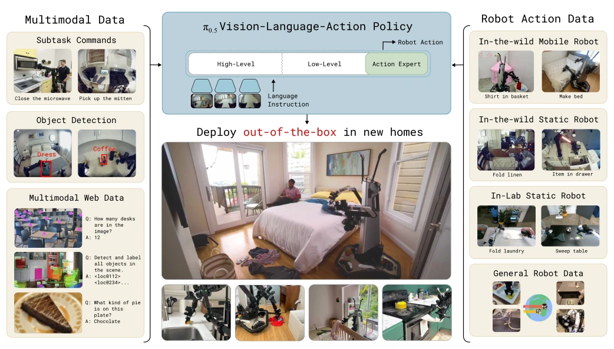
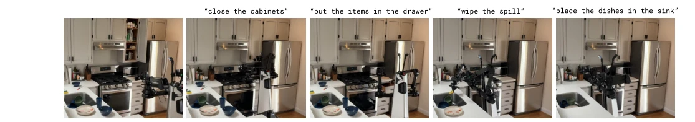
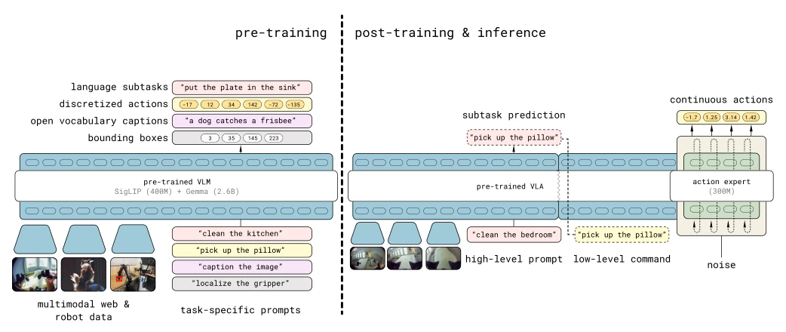
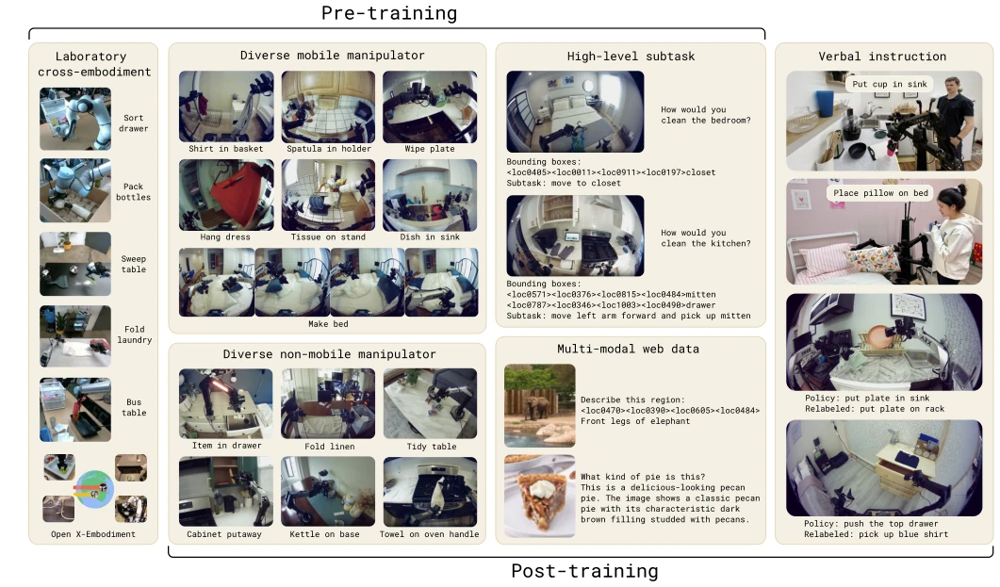
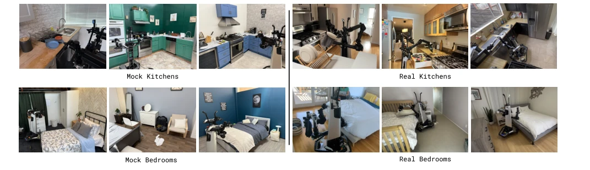
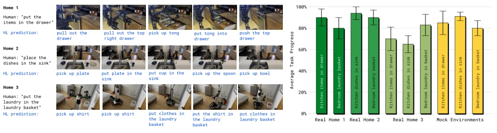
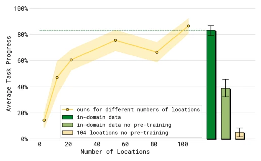
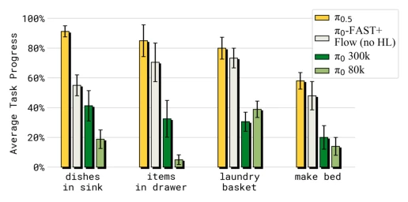
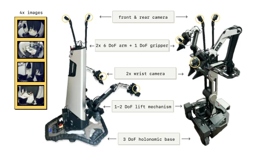
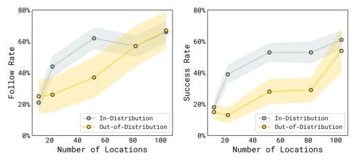

π0.5 has poured a bucket of cold water on the embodied AI circle, and also poured a bucket of oil. The cold water was poured on those still competing for data in simulation, the oil was poured on those finally daring to wash dishes in a real home kitchen. The model's biggest selling point is not "new architecture", but "hybrid training"—97.6% of pre-training data was not work done by the target robot at all, relying on cross-entity, cross-modal "knowledge distillation" to hard transfer skills to new environments. Although it claims to be end-to-end, the underlying layer still relies on PD controllers as a fallback, does this count as "pseudo end-to-end"? However, being able to work continuously for 15 minutes in a new home is much better than those VLAs that can only pick up a cup. The downside is, data dependency is too heavy, without that 400 hours of real robot data, this model is a castle in the air. Additionally, although hierarchical reasoning improves long-horizon task capability, it also increases latency, and real-time performance in complex scenarios still needs verification.
The ultimate goal of embodied AI is to step out of the laboratory, but reality is stark. Existing VLA models [8, 2, 63] mostly perform well within the training distribution, once the scene switches (e.g., new kitchen layout, new objects), generalization ability drops precipitously. Long-horizon tasks (e.g., cleaning the whole room) require multi-stage reasoning, relying solely on imitation learning makes it difficult to cover all unexpected situations. Although expanding the dataset can improve generalization [67], collecting full-scenario real robot data costs extremely high, and it is difficult to cover all object combinations. The core problem π0.5 attempts to solve is: how to use heterogeneous data (Web, other robots, high-level semantics) to make up for the scarcity of target domain data, achieve true open-world generalization, rather than just ranking on the training set.

Fig. 1: The π0.5 model transfers knowledge from a heterogeneous range of data sources, including other robots, high-level subtask prediction, verbal instructions, and data from the web, in order to enable broad generalization across environments and objects. π0.5 can control a mobile manipulator to clean kitchens and bedrooms in new homes that were not present in the training data, performing complex multi-stage behaviors with durations of 10 to 15 minutes.

Fig. 2: π0.5 cleaning a new kitchen. The robot is tasked with cleaning a kitchen in a home that was not in the training data. The model is given general tasks (close the cabinets, put the items in the drawer, wipe the spill, and put the dishes in the sink), which it performs by both predicting subtasks to accomplish (e.g., pick up the plate) and emitting low-level actions.
π0.5 adopts a two-stage training strategy. The first stage pre-training, discretizes actions (FAST tokenizer), mixes multi-source data (Mobile Manipulator MM, Non-Mobile Manipulator ME, Lab Cross-Entity CE, High-Level Subtask HL, Web Multimodal WD), trains into a base VLA. The second stage post-training, introduces "Action Expert", uses Flow Matching to generate continuous actions, focuses on mobile manipulation tasks, and adds Human Verbal Instruction (VI) data. During inference, a hierarchical architecture is adopted: first predict high-level semantic subtasks (e.g., "pick up the plate"), then predict low-level action blocks based on subtasks. This design allows the model to both use Web data to understand semantics, and use robot data to master physical interaction. In terms of action representation, it combines the pre-training efficiency of discrete tokens and the inference accuracy of continuous actions, optimizing joint prediction of text and actions through a combined loss function.

Fig. 3: Model overview. π0.5 is trained in two stages. First, a pre-training stage combines all of the different data sources to produce an initial VLA with discrete tokens. This stage uses data from diverse robotic platforms, high-level semantic action prediction, and data from the web. Robotic data uses the FAST action tokenizer to represent actions as discrete tokens [64]. Second, a post-training stage specializes the model for low-level and high-level inferences for mobile manipulation, leveraging the most task-relevant data, including verbal instructions from human supervisors. This stage uses flow matching to represent the action distribution, enabling efficient real-time inference and the ability to represent fine-grained continuous action sequences. At inference time, the model fir

Fig. 4: Examples from pre-training and post-training tasks. π0.5 is pre-trained on data from mobile manipulators (MM), non-mobile robots in diverse environments (ME), and cross-embodiment data collected under laboratory conditions (CE), as well as high-level subtask prediction (HL), and multi-modal web data (WD). In a post-training phase, we additionally use verbal instructions (VI), and omit the laboratory cross-embodiment data (CE) to focus the model on mobile manipulation and diverse environments. The figure displays an exemplary subset of the tasks in each category.
Evaluated in 3 unseen real home environments, tasks include cleaning kitchen and bedroom, duration 10-15 minutes. Comparison baselines include π0 and ablation models with different data combinations. Main findings: 1) π0.5 significantly outperforms π0 in unseen scenes, capable of completing complex multi-stage tasks; 2) Increasing the number of training environments improves performance, and approaches the effect of training directly in that environment; 3) Ablation experiments show that excluding cross-entity data (ME/CE) leads to a significant performance drop, proving heterogeneous data migration is crucial; 4) Web data provides significant help for generalization of unseen object categories. Language following rate and success rate steadily improve with increasing training locations, proving the importance of data diversity for generalization.

Fig. 6: Evaluation environments. We evaluate π0.5 in entirely new kitchens and bedrooms that were not seen during training, with novel objects, backgrounds, and layouts. We use a set of mock rooms for controlled, reproducible quantitative comparisons (left) and real homes for a realistic final evaluation (right).

Fig. 7: Evaluation in real homes. We evaluated π0.5 in three kitchens and three bedrooms in real homes that were not seen during training. We evaluate the tasks ‘items in drawer’, ‘laundry basket’, and ‘dishes in sink,’ and find π0.5 to be successful at these tasks in these completely new, real homes.

Fig. 8: Evaluating performance with different numbers of locations. Performance over the four test tasks — “dishes in sink”, “items in drawer”, “laundry basket”, “make bed” — improves with more training environments. The dashed green line and green bar show a baseline model that includes the test homes in the training set. Compared to this model, our best model achieves similar performance, despite not seeing any data from the test homes.

Fig. 12: Comparing π0.5 with other models. Our full model significantly outperforms both π0 and π0-FAST+Flow in the mock home test environments.
其他图片Other Figures

Fig. 5: Robot system overview. We use two mobile manipulator platforms – each has four cameras (forward, backward, and both wrists), two 6 DoF arms with parallel jaw grippers, a mobile base, and a torso lift mechanism. The π0.5 model controls the joints and grippers of each arm, base velocity, and the lift position, resulting in 18-19 DoF state and action spaces.

Fig. 9: Evaluating language following with different numbers of training locations. We evaluate language following rate and success rate for picking up user-indicated items and placing them into drawers or sinks, averaged over seen object categories (“in-distribution”) or unseen categories (“out-of- distribution”). Performance increases steadily as we increase the number of training locations.